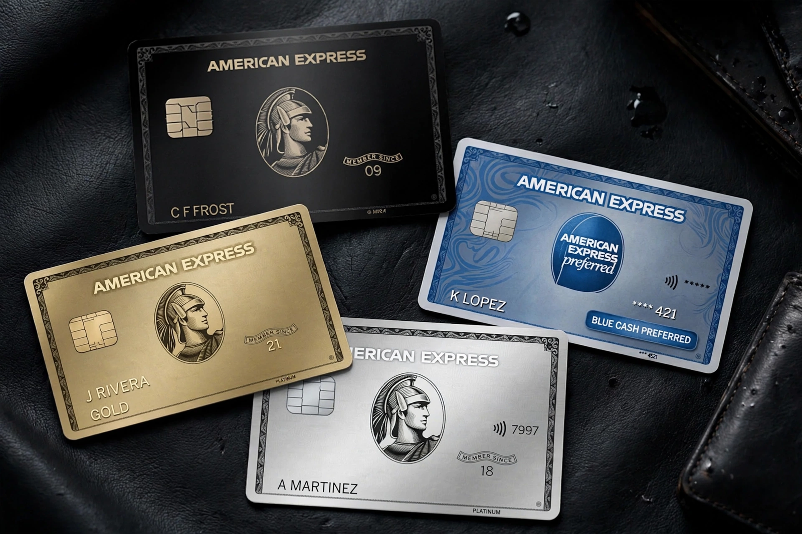

| American Express Company | |
| Type | Public (NYSE: AXP) |
|---|---|
| Industry | Financial services; payment cards |
| Founded | March 18, 1850; Buffalo, New York, U.S. |
| Founders | Henry Wells, William G. Fargo, John Warren Butterfield |
| Headquarters | 200 Vesey Street, New York City |
| Key people | Stephen J. Squeri (Chairman & CEO) |
| Products | Charge cards, credit cards, traveler's cheques, corporate banking |

The American Express Company (Amex) is an American multinational financial services corporation headquartered in New York City. Founded in 1850 as an express mail company, it is best known for its charge cards, credit cards, and traveler's cheques. American Express operates its own payment network and consistently ranks among the most valuable global brands; its cards are associated with affluent customers and premium rewards, including the invitation-only Centurion Card ("black card").
American Express was formed in Buffalo, New York, in 1850 by the merger of express companies owned by Henry Wells, William G. Fargo, and John Warren Butterfield. The same founders later established Wells Fargo in 1852 to serve California. The company built a near-monopoly on express shipments in New York State and expanded into financial services: money orders in 1882 and the traveler's cheque in 1891, an invention of employee Marcellus Fleming Berry that made the company a fixture of international travel.
During World War I the company's express business was absorbed into the nationalized American Railway Express Agency (1918), and American Express refocused on travel and finance. It issued its first charge card in 1958, the Gold Card in 1966, the Platinum Card in 1984, and the Centurion Card in 1999. The slogan "Don't leave home without it," launched in 1975 with actor Karl Malden, became a cultural catchphrase.
Unlike Visa and Mastercard, which operate open networks through issuing banks, American Express historically issued its own cards and acquired its own merchants (a "closed loop"), capturing both sides of the transaction. It earns most revenue from discount fees charged to merchants and from annual card fees, with comparatively less reliance on interest income because its traditional charge cards required payment in full each month. Since the 2010s it has licensed its network to bank issuers in many markets through the Global Network Services business.
Flagship consumer products include the Green, Gold, and Platinum charge cards and co-branded credit cards with partners such as Delta Air Lines and Hilton. The Membership Rewards program, airport Centurion Lounges, and small-business offerings are central to its premium positioning. American Express is a component of the Dow Jones Industrial Average and one of Berkshire Hathaway's largest long-term holdings.